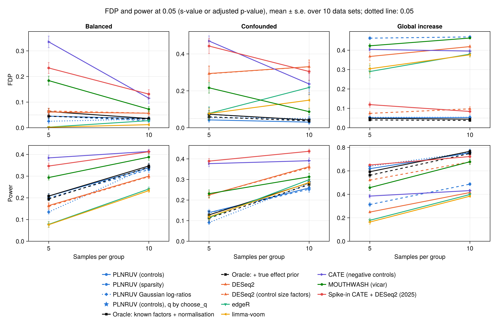
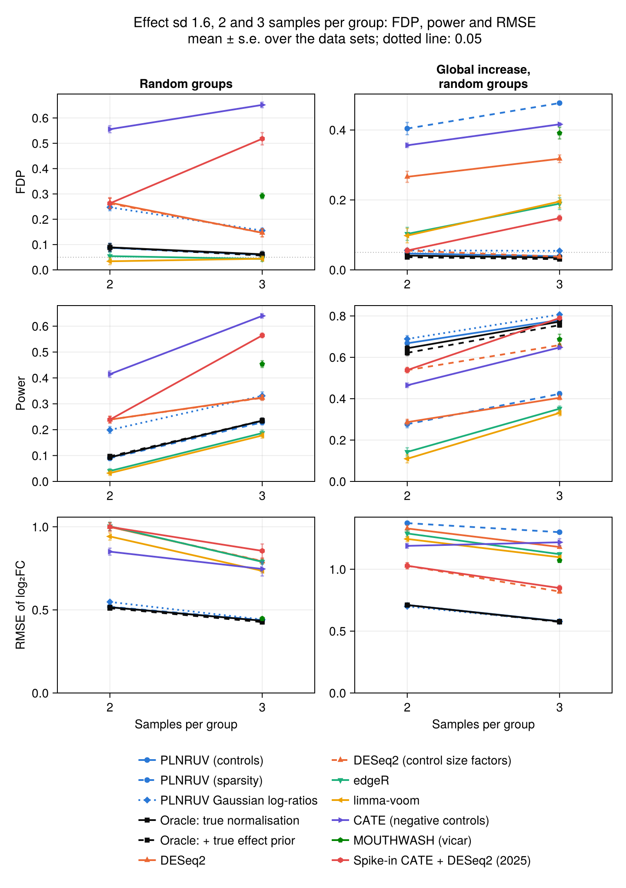

7. Validation
This page collects all the numerical results. Each component is checked against a known truth and, where one exists, against the reference implementation in R. The R packages are used only in the separate benchmark/ environment.
FDP is the false discovery proportion among the genes reported at s-value < 0.05 (or BH-adjusted p-value < 0.05 for the methods without s-values). Null genes and wrong signs both count as errors. Power is the proportion of non-null genes reported with the right sign.
7.1 The simulator
- Thinning probabilities.
thin_countsandseqgendiff::thin_diff, with the same design and coefficients on counts of $10^7$: the largest difference in thinning probability over 6 000 counts is $6.9 \times 10^{-4}$, the binomial noise expected at that depth. - Confounded groups. By default
thin_2groupkeeps a group assignment only if its correlations are within 0.15 of the target, so the target is met in every data set (§6.3). The score alone (assignment = :threshold, as in seqgendiff) meets it only on average. Both given seqgendiff's own surrogate variables, with target correlations $(0.6, 0.2)$, mean realised correlation over 30 replicates of 100 GTEx samples:
| factor 1 (target 0.6) | factor 2 (target 0.2) | |
|---|---|---|
PLNRUV, assignment = :threshold | 0.58 | 0.19 |
| seqgendiff | 0.46 | 0.15 |
The two define the target differently. seqgendiff sets the correlation of a continuous score, then cuts it in two groups, which shrinks the correlation by about 0.8 for equal groups (0.6 × 0.8 = 0.48). PLNRUV sets the correlation of the groups themselves (§6.3).
7.2 ash and MOUTHWASH
- ash, 5 000 effects, 20 % non-null with sd 2, standard errors 0.5: $\hat\pi_0 = 0.78$ (truth 0.8 plus the near-zero effects), RMSE 0.29 against 0.50 for the raw estimates, FDP 4.8 %.
- MOUTHWASH against vicar. With the same model (three free factors, normal likelihood, no offset factor), the two implementations agree to two or three decimals in RMSE, number of discoveries and FDP.
- The offset factor. Simulated log abundances, 40 samples, 1 000 genes, two confounders, compositional shift of 1 correlated with the group, three replicates:
| RMSE | FDP | |
|---|---|---|
| PLNRUV MOUTHWASH (offset factor, 2 free factors) | 0.10–0.12 | 3–7 % |
| vicar, 3 free factors | 0.15–0.26 | 6–15 % |
| vicar, 2 free factors (shift not modelled) | 0.63–1.04 | 71–81 % |
The offset coefficient is estimated at $\hat\alpha_0 \approx 1.0$, the true shift, with or without control genes.
7.3 The PLN layer
- The latent values. The Lambert W solution matches a brute-force maximisation ($M = 0.50043$ against $0.50045$ on a grid of step $5\times 10^{-5}$). $\mathcal W_0(e^t)$ is accurate to $3\times10^{-15}$ and finite up to $t = 800$.
- Degrees of freedom of the variances (§5.4). Variances drawn with $a_0 = 2$, 4 samples, 2 000 genes:
| estimated $a_0$ | |
|---|---|
| exact EM (Gaussian data) | 2.02 |
| mean field, every count counted (Gaussian data) | 5.84 |
| PLN fit, GTEx-like counts | 2.25 (common prior), 2.34 (trend) |
Without the correction, $a_0$ ran to its upper bound on low counts and the fit did not converge.
- The variance trend. On 200 GTEx muscle samples (4 000 genes), $\sigma_j^2$ follows a U-shape in expression: 0.78 for the weakest genes, about 0.09 in the upper middle, 0.33 for the strongest. A local fit predicts the variances best (cross-validated error 0.59 against 1.03 for one common value and 0.68 for the DESeq2 form), with a flat optimum for spans 0.05–0.2. Around the trend the genes still spread like $a_0 \approx 2$.
- Uncertainty of the loadings (§4.3). Estimates confounded with $\alpha = 2$, loadings known up to an error of variance 0.02: without the term, FDP 43 % and $\hat\lambda = 3.1$; with it, FDP 3 % and $\hat\lambda = 1.03$. On GTEx (confounded, 5 per group), the null residuals of the highest-expressed genes had 1.8 times the modelled variance; with the term, 1.2.
- Weak factors. With 5 factors and 10 samples per group, the fit took 901 iterations without the parameter-expanded step and 57 with it, and reached a slightly higher ELBO.
- Stopping rules. A 100 times tighter tolerance changes s-values by at most 0.001 and no discovery.
7.4 Benchmark on thinned GTEx data
Two-group experiments are built from GTEx v8 skeletal muscle by binomial thinning (§6): 2 000 genes, 200 negative controls, 2 to 10 samples per group. There are 30 data sets per scenario with 2 or 3 samples per group, and 10 with 5 or 10.
- Random groups: 20 % of the genes change, log₂ fold changes $\sim \mathcal N(0, 0.8)$; the samples are split at random.
- Balanced: the same effects; the groups are uncorrelated with the two main factors (|ρ| ≤ 0.15).
- Confounded: the same effects; the groups are correlated with the two main factors (0.6 and 0.2, ± 0.15).
- Global increase: 60 % of the genes go up, log₂ fold changes $\sim \mathcal N(1, 0.5)$, with random groups or confounded as above.
A target correlation can only be met on selected sets of samples with 2 or 3 per group (§6.3), so the balanced and confounded scenarios start at 5 per group.
PLNRUV takes its number of factors from choose_q. The R methods use $q = 2$, or $n - 4$ when fewer samples leave no room for two. The oracle knows the true normalisation and fits its own hidden factors, with the same $q$ as PLNRUV.

FDP / power, means over the data sets:
| scenario | per group | PLNRUV (controls) | PLNRUV (sparsity) | oracle | DESeq2 | edgeR | limma-voom | vicar | spike-in CATE |
|---|---|---|---|---|---|---|---|---|---|
| random groups | 2 | 13 % / 0.01 | 10 % / 0.01 | 12 % / 0.01 | 53 % / 0.07 | 6.7 % / 0.00 | 1.7 % / 0.00 | – | 52 % / 0.07 |
| random groups | 3 | 8.1 % / 0.04 | 9.9 % / 0.04 | 8.9 % / 0.04 | 28 % / 0.09 | 10 % / 0.01 | 10 % / 0.01 | 42 % / 0.20 | 60 % / 0.37 |
| random groups | 5 | 7.0 % / 0.17 | 7.8 % / 0.17 | 7.8 % / 0.17 | 19 % / 0.20 | 6.2 % / 0.09 | 4.8 % / 0.09 | 17 % / 0.25 | 37 % / 0.38 |
| random groups | 10 | 4.0 % / 0.35 | 3.8 % / 0.35 | 4.4 % / 0.35 | 9.4 % / 0.31 | 4.0 % / 0.25 | 1.8 % / 0.24 | 7.9 % / 0.38 | 14 % / 0.42 |
| balanced | 5 | 5.1 % / 0.22 | 4.9 % / 0.21 | 5.3 % / 0.22 | 6.1 % / 0.16 | 0.2 % / 0.08 | 0.2 % / 0.08 | 18 % / 0.29 | 23 % / 0.35 |
| balanced | 10 | 3.4 % / 0.36 | 3.7 % / 0.35 | 3.5 % / 0.36 | 5.7 % / 0.30 | 2.8 % / 0.24 | 1.2 % / 0.23 | 7.2 % / 0.39 | 13 % / 0.41 |
| confounded | 5 | 6.9 % / 0.15 | 8.3 % / 0.15 | 7.2 % / 0.15 | 29 % / 0.22 | 7.8 % / 0.11 | 7.7 % / 0.12 | 22 % / 0.23 | 44 % / 0.39 |
| confounded | 10 | 4.4 % / 0.29 | 5.9 % / 0.29 | 4.8 % / 0.29 | 33 % / 0.36 | 22 % / 0.30 | 15 % / 0.29 | 8.7 % / 0.31 | 30 % / 0.44 |
| global, random groups | 2 | 6.6 % / 0.35 | 25 % / 0.08 | 5.5 % / 0.30 | 34 % / 0.06 | 0.0 % / 0.00 | 3.3 % / 0.00 | – | 11 % / 0.20 |
| global, random groups | 3 | 5.3 % / 0.52 | 34 % / 0.17 | 4.7 % / 0.49 | 25 % / 0.09 | 8.6 % / 0.01 | 8.3 % / 0.01 | 29 % / 0.22 | 19 % / 0.60 |
| global, random groups | 5 | 5.0 % / 0.64 | 47 % / 0.38 | 4.8 % / 0.64 | 31 % / 0.21 | 17 % / 0.13 | 16 % / 0.12 | 40 % / 0.44 | 11 % / 0.64 |
| global, random groups | 10 | 4.8 % / 0.82 | 49 % / 0.59 | 4.7 % / 0.82 | 41 % / 0.38 | 35 % / 0.36 | 34 % / 0.35 | 47 % / 0.73 | 4.9 % / 0.73 |
| global, confounded | 5 | 5.4 % / 0.63 | 47 % / 0.32 | 5.2 % / 0.63 | 37 % / 0.25 | 29 % / 0.18 | 30 % / 0.16 | 42 % / 0.46 | 12 % / 0.65 |
| global, confounded | 10 | 5.6 % / 0.78 | 47 % / 0.52 | 5.2 % / 0.78 | 42 % / 0.42 | 38 % / 0.40 | 38 % / 0.38 | 46 % / 0.68 | 8.4 % / 0.72 |
vicar needs at least 3 samples per group.
What this shows:
- PLNRUV with controls has the FDP and the power of the oracle in every scenario and at every size.
- From 5 samples per group it stays close to 5 %. With 2 or 3 per group the oracle itself is above 5 % (8–13 % with random groups), and so is PLNRUV. With effects of sd 0.8 there are then very few discoveries.
- Without controls, PLNRUV is calibrated when most genes do not change, and fails, as expected, when most go up (§1.3).
- The standard pipelines lose control as soon as the groups are confounded, and with 2 or 3 samples even when they are not. The higher power of CATE and of the spike-in pipeline comes with a high FDP.
- The Gaussian log-ratio branch (§5.7) is close to 5 % in the global scenarios. Elsewhere it is above: 6–8 % at 10 per group, 12–15 % at 5, and 52 % at 2.
Stronger effects with few samples. With log₂ fold changes of sd 1.6, and 2 or 3 samples per group:

| scenario | per group | PLNRUV (controls) | oracle | DESeq2 | edgeR | limma-voom | spike-in CATE |
|---|---|---|---|---|---|---|---|
| random groups | 2 | 9 % / 0.09 | 9 % / 0.09 | 27 % / 0.24 | 5 % / 0.04 | 3 % / 0.03 | 26 % / 0.24 |
| random groups | 3 | 6 % / 0.23 | 6 % / 0.23 | 15 % / 0.32 | 4 % / 0.19 | 4 % / 0.18 | 52 % / 0.56 |
| global, random groups | 2 | 5 % / 0.67 | 4 % / 0.64 | 27 % / 0.29 | 10 % / 0.14 | 10 % / 0.11 | 6 % / 0.54 |
| global, random groups | 3 | 4 % / 0.78 | 3 % / 0.77 | 32 % / 0.40 | 19 % / 0.35 | 20 % / 0.33 | 15 % / 0.79 |
PLNRUV again matches the oracle. edgeR and limma-voom are calibrated with random groups when nothing changes globally, with less power; they fail when most genes go up.
Misspecified controls. The confounded and global scenarios again, 10 samples per group, but the 200 controls carry small effects: noisy controls, $\mathcal N(0, 0.2)$ each, or biased controls, which shift together, $\mathcal N(0.15, 0.05)$.

- Noisy controls average out: PLNRUV with controls stays at 2.5 % (confounded) and 3.8 % (global).
- Biased controls break every control-based method in the confounded scenario: PLNRUV 69 %, DESeq2 with control size factors 42 %, the spike-in pipeline 42 %. The sparsity branch is not affected (4.6 %). In the global scenario PLNRUV with controls stays calibrated (1.3 %), with less power (0.61 against 0.76 for the oracle).
Controls that move with the condition, even slightly, are the main threat to a control-based analysis (§8).
7.5 The PLN fit and the number of factors
Variance prior and likelihood. The same data sets (balanced, confounded, global; 5 data sets each), PLNRUV with controls and $q = 2$, FDP / power:
| scenario | per group | trend prior, $t$ (default) | common prior | trend prior, normal likelihood | earlier fit |
|---|---|---|---|---|---|
| balanced | 5 | 4.8 % / 0.22 | 4.0 % / 0.18 | 11 % / 0.30 | 2.4 % / 0.12 |
| balanced | 10 | 3.0 % / 0.35 | 2.5 % / 0.35 | 5.4 % / 0.39 | 2.6 % / 0.34 |
| confounded | 5 | 2.3 % / 0.15 | 0.0 % / 0.11 | 10 % / 0.22 | 4.1 % / 0.10 |
| confounded | 10 | 4.9 % / 0.28 | 3.6 % / 0.28 | 5.9 % / 0.30 | 5.0 % / 0.29 |
| global increase | 5 | 4.7 % / 0.64 | 4.5 % / 0.63 | 5.5 % / 0.66 | 5.1 % / 0.65 |
| global increase | 10 | 5.3 % / 0.77 | 5.2 % / 0.77 | 5.6 % / 0.78 | 5.1 % / 0.77 |
- The trend prior gains power over the common prior, and stays calibrated.
- The normal likelihood is anti-conservative with 5 samples per group: the $t$ is needed there. With 10 per group the $t$ is slightly conservative.
- The earlier fit (fixed scores and loadings, removed from the package) is calibrated here, with less power at 5 per group.
Choosing $q$ (§3.3). PLN simulations, 20 samples, 400 genes: choose_q returns the true number of factors for 0, 1, 2 and 3 factors, in one pass. On GTEx it chooses no factor at 2 per group (four samples leave no room for one), 0–2 at 3 per group, 1–4 at 5 and 3–5 at 10. The benchmark of §7.4 uses this choice.
Automatic relevance determination does not replace choose_q. Given the largest possible bound on GTEx (confounded, 5 data sets), the fit kept 3–4 of 6 factors at 5 per group and 8–9 of 16 at 10 per group. The FDP rose from 4.9 % with $q = 2$ to 7.0 % at 10 per group.